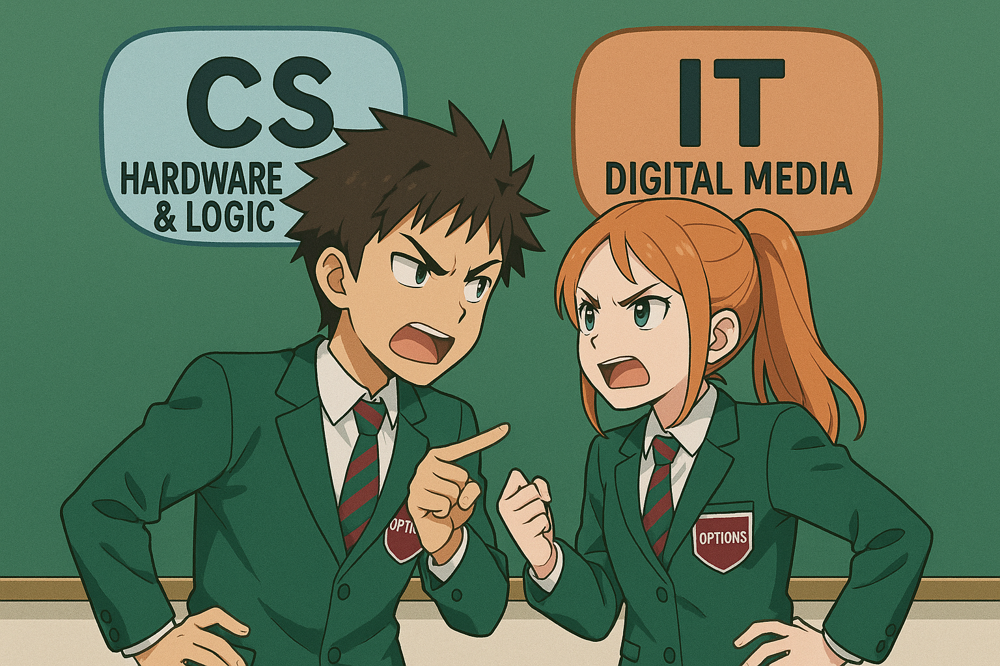

Lesson 8 – Logic (CS) vs Digital Media (IT)
Do Now

Think back to recent lessons. These get a little harder each time.
1) Which tool links many tables of data together?
Lesson 6 – Spreadsheets vs Databases:
A database links tables with relationships.
Lesson 6 – Spreadsheets vs Databases:
A database links tables with relationships.
2) What part of the OS helps you save and find files?
Lesson 7 – OS vs File Management:
The file system stores files and folders.
Lesson 7 – OS vs File Management:
The file system stores files and folders.
3) What number system stores 0–255 in one byte?
Lesson 3 – Binary vs Excel:
Binary (base-2) – 256 values in a byte.
Lesson 3 – Binary vs Excel:
Binary (base-2) – 256 values in a byte.
4) Today is about logic.
What do we call a rule that is true or false?
Lesson 8 – New learning:
A logic statement (Boolean).
Lesson 8 – New learning:
A logic statement (Boolean).
What you’ll learn
By the end of this lesson, you will be able to:
- Build simple truth tables for AND, OR, and NOT.
- Use logic to solve small problems (door access, alarms).
- Create a small digital media poster and export it to two formats, comparing quality and size.
How you’ll know you’ve got it:
- Your truth tables match the correct outputs.
- You can explain a real rule using AND/OR/NOT.
- Your poster exports show sensible format choices (PNG vs JPEG).
Key Vocabulary
- Boolean
- True/False values used in logic.
- AND
- True only if both parts are true.
- OR
- True if at least one part is true.
- NOT
- Flips the value (True → False, False → True).
- Truth table
- A table that shows all inputs and the output.
- Digital media
- Images, audio, or video made/edited on a computer.
- Compression
- Making files smaller (may lose some quality).
- Resolution
- How many pixels an image has (width × height).
- Format
- The file type (PNG, JPEG, MP4, etc.).
CS Activity – Build Truth Tables & Solve a Logic Rule
Complete the truth tables and then write the output for a simple rule.
- AND table (A ∧ B):
| A | B | A AND B |
|---|---|---|
| 0 | 0 | |
| 0 | 1 | |
| 1 | 0 | |
| 1 | 1 |
- OR table (A ∨ B):
| A | B | A OR B |
|---|---|---|
| 0 | 0 | |
| 0 | 1 | |
| 1 | 0 | |
| 1 | 1 |
- NOT column (¬A): fill for A = 0 and A = 1.
| A | NOT A |
|---|---|
| 0 | |
| 1 |
- Scenario: The lab door opens if A = StaffCardPresent AND B = PINCorrect. Complete the AND table above and write when the door opens (1) or stays shut (0).
| Table | Filled Outputs | Why |
|---|---|---|
| AND (A∧B) | (0,0→0), (0,1→0), (1,0→0), (1,1→1) | AND is only 1 when both are 1 |
| OR (A∨B) | (0,0→0), (0,1→1), (1,0→1), (1,1→1) | OR is 1 if either is 1 |
| NOT (¬A) | A=0→1, A=1→0 | NOT flips the value |
| Door rule | Opens only when A=1 and B=1 | Staff card AND correct PIN required |
IT Activity – Make a Simple Poster & Compare Formats
Create a short, clear poster slide (online safety, club advert, or homework reminder). Export it to two formats and compare.
- Open PowerPoint (or similar). Create one slide with:
- Short title (≤ 6 words) and one key message.
- One image or icon (clear and relevant).
- High contrast colours for easy reading.
- Export the slide twice:
- As PNG (good for sharp text/logos).
- As JPEG (often smaller; may blur a little).
- Record file sizes (KB) and note the visual difference.
- Optional: Try lowering JPEG quality to make a very small file; note what changes.
| Check | PNG | JPEG | Notes |
|---|---|---|---|
| File size | 220 KB | 140 KB | JPEG smaller at same resolution |
| Text sharpness | Very sharp | Slight blur | PNG is lossless; JPEG is lossy |
| Photo quality | Good | Good (smaller) | JPEG suits photos; avoid over-compression |
| Best use | Logos, icons, sharp graphics | Photos, web images | Pick the format for the content |
Exit Ticket
- When is AND true?
- Write the NOT of A=0.
- Which format is usually sharper for text: PNG or JPEG?
💡 Sample Answers
- When both inputs are 1 (true).
- NOT 0 = 1.
- PNG is usually sharper for text and logos.
Show All
This view expands all sections for printing/PDF. Use the toggles to show/hide sample tables.